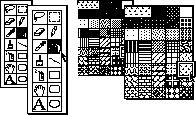
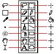
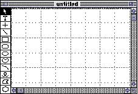

|
PalettesYou can use icons, patterns, colors, characters, or drawings that representan operation in a palette. You need to provide visual feedback about the current selection in a palette. In a palette that contains tools, highlight the currently selected tool. In a palette that contains patterns or colors, you can outline the currently selected item and include a preview area that shows the current selection. When the user clicks a new item, change the selection to that item. You also need to provide tracking feedback in palettes. That is, as a user drags over the items in a palette, each item should be highlighted or outlined when the pointer is over it. Only one item can be active at a time. (If your application uses only one palette for multiple open windows, then the palette reflects the settings for the active window.) Figure 4-56 shows some palettes and the feedback they provide to show the currently selected tool or pattern. Figure 4-56 Palettes and feedback  |
|
|
In a palette of tools or patterns, you can change the pointer shape to give additional feedback about the current selection. People can change a selection immediately by clicking another item. Figure 4-57 shows a tool palette and the corresponding pointers that provide additional feedback to the user about which tool is active. |
|
Figure 4-57 A tool palette with the corresponding
pointers
 If you include tool palettes as part of your windows, put them on the left side of the window or along the top of the window underneath the title bar. Using these positions keeps the palettes from conflicting with standard window controls. Don't put palettes in areas where users expect standard controls like scroll bars or the close box. Figure 4-58 shows a window with a tool palette in an appropriate location. Figure 4-58 A tool palette in a window  If the palette is part of a window, then the user has less area for content, especially on a small screen. Also parts of the palette may be concealed if the user makes the window smaller. If a palette is not part of a window, then it takes up extra space on the desktop. |